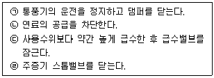
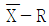
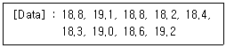
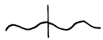
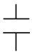
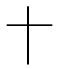
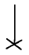

에너지관리기능장 (2003-07-20 기출문제)
1과목: 임의 구분
1. 강제순환식 수관보일러에 해당되는 것은?
- 라몬트 보일러
- 바브콕 보일러
- 다쿠마 보일러
- 랭카셔 보일러
(정답률: 61%)

2. 급수온도 20 ℃, 압력 7 kg/cm2의 증기를 매시 2000 kg 발생시키는 보일러의 상당 증발량은? (단, 발생 증기의 엔탈피는 650 kcal/kg 이다.)
- 2138 kg/h
- 2238 kg/h
- 2338 kg/h
- 2438 kg/h
(정답률: 43%)
3. 기체연료의 특징 설명으로 옳은 것은?
- 연소조절 및 점화, 소화가 용이하다.
- 자동제어가 곤란하다.
- 과잉공기가 많아야 완전 연소된다.
- 누출 및 폭발 위험성이 적다.
(정답률: 95%)
4. 보일러 본체는 수부와 무엇으로 구성되는가?
- 화로
- 증기부
- 연소실
- 관부
(정답률: 70%)
5. 열효율 73.6 % 인 보일러를 열효율 86.7 % 로 개선하였다면 약 몇 % 의 연료가 절감되는가?
- 11.0 %
- 12.1 %
- 14.0 %
- 15.1 %
(정답률: 41%)
6. 5 kg 의 철을 80 ℃ 에서 120 ℃ 까지 높이는데 필요한 열량은 몇 kcal인가? (단, 철의 비열은 0.12 kcal/kg·℃ 이다.)
- 12 kcal
- 24 kcal
- 36 kcal
- 48 kcal
(정답률: 57%)
7. 평형노통과 비교한 파형노통의 단점으로 옳은 것은?
- 외압에 대하여 강도가 작다.
- 평형노통보다 전열면적이 작다.
- 열에 의한 신축 탄력성이 적다.
- 스케일이 부착하기 쉽다.
(정답률: 70%)
8. 압입통풍 방식의 설명으로 옳은 것은?
- 배기가스와 외기의 비중량 차를 이용한 통풍방식이다.
- 연도나 연돌 쪽에만 송풍기가 있는 방식이다.
- 버너 쪽과 연돌 쪽에 각각 송풍기가 설치된 방식이다
- 버너 쪽에만 송풍기가 있는 방식이다.
(정답률: 72%)
9. 보일러에 사용되는 부르돈관 압력계의 설치에 대한 설명으로 잘못된 것은?
- 압력계 콕은 그 핸들이 수직의 증기관과 동일 방향에 놓일 때 닫히는 상태여야 한다.
- 사이폰관을 설치하여 증기가 직접 압력계 내부로 들어가는 것을 방지한다.
- 압력계에 연결되는 증기관은 보일러 최고사용압력에 견디는 것이어야 한다.
- 증기온도가 483K(210 ℃) 를 넘을 때는 압력계의 증기관으로 황동관이나 동관을 사용할 수 없다.
(정답률: 88%)
10. 보일러 연소시 역화가 발생하는 경우와 가장 거리가 먼 것은?
- 연도 댐퍼가 닫혀 있는 상태에서 점화하는 경우
- 프리퍼지가 부족한 상태에서 점화하는 경우
- 점화시 착화가 빠를 경우
- 유압이 너무 과대한 경우
(정답률: 78%)
11. 노내 가스폭발과 가장 관계가 없는 것은?
- 심한 불완전연소를 하는 경우
- 연소정지 중에 연료가 노내에 유입된 경우
- 연도의 굴곡이 심한 경우
- 연도가 짧은 경우
(정답률: 88%)
12. 보일러 내면에 발생하는 점식(pitting)의 방지법이 아닌 것은?
- 용존 산소를 제거한다.
- 아연판을 메단다.
- 약한 전류를 통전시킨다.
- 브리딩 스페이스를 크게 한다.
(정답률: 91%)
13. 보일러의 수격작용 발생 방지 조치로 옳은 것은?
- 송기시 주증기밸브를 천천히 연다.
- 가능한 한 찬물로 급수를 한다.
- 급수내관이 보일러 수면위로 노출되게 하여 급수한다
- 연소실에 기름의 공급량을 줄인다.
(정답률: 92%)
14. 보일러에서 슬러지 조정 목적의 청관제로 사용되는 약품이 아닌 것은?
- 탄닌
- 리그닌
- 히드라진
- 전분
(정답률: 69%)
15. 보일러 저온부식의 원인이 되는 것은?
- 과잉공기 중의 질소 성분
- 연료 중의 바나듐 성분
- 연료 중의 유황 성분
- 연료의 불완전 연소
(정답률: 85%)
16. 캐리 오버가 발생하는 경우가 아닌 것은?
- 증기 배관 내에 드레인이 다량 있는 경우
- 증기실이 적고 증발수면이 좁은 경우
- 보일러 수면이 너무 높은 경우
- 프라이밍이나 포밍이 발생한 경우
(정답률: 50%)
17. 물의 잠열에 대하여 옳게 설명한 것은?
- 압력의 상승으로 증가하는 일의 열당량을 의미한다.
- 물의 온도 상승에 소요되는 열량이다.
- 온도 변화 없이 상(相) 변화만을 일으키는 열량이다.
- 건조 포화증기의 엔탈피와 같다.
(정답률: 84%)
18. 벤튜리(venturi)계로는 유체의 무엇을 측정하는가?
- 속도
- 압력
- 온도
- 마찰
(정답률: 78%)
19. 액체와 기체의 구별이 없는 온도는?
- 포화온도
- 임계온도
- 노점
- 이슬점
(정답률: 87%)
20. 1칼로리(cal)를 쥬울(joule) 단위로 환산하면 약 얼마인가?
- 0.24 J
- 860 J
- 4.2 J
- 9.8 J
(정답률: 58%)
2과목: 임의 구분
21. 0.5 kW 의 전열기로 20 ℃ 의 물 5 kg 을 80 ℃ 까지 가열하는데 소요되는 시간은? (단, 가열효율은 90 % 이다.)
- 46.5 분
- 21.0 분
- 32.3 분
- 12.7 분
(정답률: 50%)
22. 밀폐된 용기속의 유체에 압력을 가(加)했을 때 그 압력이 작용하는 방향은?
- 압력을 가하는 방향으로 작용
- 압력을 가하는 반대 방향으로 작용
- 용기내 모든 방향으로 작용
- 용기의 하부 방향으로만 작용
(정답률: 86%)
23. 760 mmHg 의 대기압을 수주(水柱)로 나타내면 몇 m 인가?
- 1 m
- 1.33 m
- 30.33 m
- 10.33 m
(정답률: 66%)
24. 압력 배관용 탄소강관의 KS 기호는?
- SPPS
- STPW
- SPW
- SPP
(정답률: 91%)
25. 배관의 하중을 위에서 걸어 당겨 지지하는 부품인 행거(hanger)의 종류가 아닌 것은?
- 스프링 행거
- 롤러 행거
- 콘스탄트 행거
- 리지드 행거
(정답률: 77%)
26. 열전도율이 작고 가벼우며 물에 개어서 사용할 수도 있는 무기질 보온재는?
- 탄산 마그네슘
- 탄화 콜크
- 규조토
- 석면
(정답률: 62%)
27. 관로(管路)의 유체 마찰저항은 유체속도의 몇 제곱에 비례하는가?
- 4 제곱
- 3 제곱
- 2 제곱
- 1 제곱
(정답률: 70%)
28. 고온에서 수소취화 현상이 없고, 전기 전도도가 우수한 동(銅)은?
- 인탈산 동
- 무산소 동
- 터프 피치 동
- 황산 동
(정답률: 88%)
29. 다음 중 발포(發泡) 보온재에 해당되지 않는 것은?
- 우레탄
- 폴리스틸렌
- 양모 펠트
- 염화비닐
(정답률: 78%)
30. 수소 1 kg 을 완전 연소시키는데 필요한 공기량은? (단, 공기 중의 산소 중량 백분율은 23.2 % 임.)
- 8 kg
- 16 kg
- 26.7 kg
- 34.5 kg
(정답률: 39%)
31. 호칭지름 15 A 의 관을 반지름 90 mm, 각도 90° 로 구부리고 자 할 때 필요한 곡선부의 길이는?
- 135.0 mm
- 141.4 mm
- 158.6 mm
- 160.8 mm
(정답률: 77%)
32. 보일러의 수면계를 점검해야 하는 시기와 무관한 것은?
- 두 개의 수면계 수위가 서로 상이할 때
- 수면계의 수위가 의심스러울 때
- 프라이밍, 포밍 등이 발생할 때
- 압력계의 압력이 내려갈 때
(정답률: 82%)
33. 물의 알칼리도에서 M 알칼리도는 어느 지시약으로 측정하는가?
- 페놀프타레인
- 메틸 알콜
- 메틸 오렌지
- 암모니아
(정답률: 70%)
34. 압력이 100 kg/cm2인 습증기가 있다. 포화수의 엔탈피가 334 kcal/kg 이고, 건조포화증기 엔탈피는 652 kcal/kg, 건조도가 80 % 일 때, 이 습증기의 엔탈피는?
- 427.5 kcal/kg
- 575.4 kcal/kg
- 588.4 kcal/kg
- 641.5 kcal/kg
(정답률: 59%)
35. 다이헤드식 나사절삭기로 할 수 없는 작업은?
- 관의 절단
- 관의 접합
- 나사 절삭
- 거스러미 제거
(정답률: 92%)
36. 연료 및 열의 석유환산기준에서 기준이 되는 연료는?
- 원유
- 벙커-C유
- 석탄
- 휘발유
(정답률: 85%)
37. 에너지이용합리화법상의 특정열사용기자재가 아닌 것은?
- 강철제 보일러
- 난방기기
- 2종압력용기
- 온수보일러
(정답률: 76%)
38. 난방부하가 4500 kcal/h 인 방의 온수 방열기의 방열면적은 약 몇 m2로 하면 되는가? (단, 방열기 방열량은 표준방열량으로 한다.)
- 6 m2
- 7 m2
- 9 m2
- 10 m2
(정답률: 69%)
39. 바닥 패널 히팅(panel heating)에 관한 설명으로 틀린 것은?
- 별도의 방열기가 없으므로 공간 활용도가 높아진다.
- 실내의 온도 상승시간이 비교적 길어진다.
- 화상을 입을 염려가 없고, 공기의 오염이 적다.
- 온도 분포로 볼 때 천정 근처의 온도가 가장 높다.
(정답률: 83%)
40. 동관과 강관의 이음에 사용되는 것으로 분해, 조립이 자유로운 이음방식은?(오류 신고가 접수된 문제입니다. 반드시 정답과 해설을 확인하시기 바랍니다.)
- 나사이음
- 플레어 이음
- 용접이음
- 플랜지 이음
(정답률: 35%)
3과목: 임의 구분
41. 편차의 정(+), 부(-)에 의하여 조작 신호가 최대, 최소가 되는 제어 동작은?
- 다위치 동작
- 미분 동작
- 적분 동작
- 온 · 오프 동작
(정답률: 90%)
42. 내화물의 스폴링(spalling) 현상이 발생하는 원인이 아닌 것은?
- 온도 급변에 의한 열영향
- 구조적인 응력 불균형
- 조직 변화에 의한 영향
- 수증기 흡수에 의한 체적 팽창
(정답률: 69%)
43. 저압 증기보일러에서 보일러수가 환수관으로 역류하거나 누출하는 것을 방지하기 위하여 설치하는 배관 방식은?
- 리프트 피팅 배관
- 하트 포드 접속법
- 에어 루프 배관
- 바이패스 배관
(정답률: 88%)
44. 난방부하를 계산할 때 고려하지 않아도 좋은 것은?
- 벽체를 통과하는 열량
- 유리창을 통과하는 열량
- 창문 틈새 등의 환기로 인한 열량
- 전등과 같은 기기에 의한 열량
(정답률: 92%)
45. "일정량의 기체의 부피는 압력에 반비례하고, 절대온도에 비례한다"는 법칙은?
- 아보가드르의 법칙
- 보일-샬의 법칙
- 달톤의 법칙
- 보일의 법칙
(정답률: 83%)
46. 원통형 보일러와 비교할 때 수관식 보일러의 장점이 아닌 것은?
- 수관의 배열이 용이하며 패키지형으로 제작이 가능하다.
- 보일러 효율이 좋고 용량에 비해 가벼워서 운반과 설치가 쉽다.
- 증발량에 대한 수부가 커서 부하변동에 응하기 쉽다.
- 전열면적이 커서 증기발생이 빠르고 증발량이 많다.
(정답률: 46%)
47. 입형 보일러의 특징 설명으로 잘못된 것은?
- 설비비가 많이 들지만 보일러 효율이 높다.
- 좁은 장소에 설치가 용이하다.
- 전열면적이 작아 부하능력이 적다.
- 수부가 좁아 습증기가 발생할 수 있다.
(정답률: 78%)
48. 보일러의 증발계수에 대하여 옳게 설명한 것은?
- 실제 증발량을 상당 증발량으로 나눈 값이다.
- 상당 증발량을 539로 나눈 값이다.
- 상당 증발량을 실제 증발량으로 나눈 값이다.
- 실제 증발량을 539로 나눈 값이다.
(정답률: 57%)
49. 전열면적이 15 m2인 증기보일러의 급수밸브 크기는?
- 32 A 이상
- 25 A 이상
- 20 A 이상
- 15 A 이상
(정답률: 60%)
50. 보일러 급수의 외처리에서 고체협잡물의 처리 방법이 아닌 것은?
- 기폭법
- 침강법
- 응집법
- 여과법
(정답률: 66%)
51. 다음 중 합성고무로 만든 패킹제는?
- 테프론
- 네오프렌
- 펠트
- 아스베스토스
(정답률: 84%)
52. 플라스틱 내화물의 결합제가 아닌 것은?
- 유기질 결합제
- 물유리
- 가소성 점토
- 알루미나 시멘트
(정답률: 71%)
53. 보일러 수의 관내처리를 위하여 투입하는 청관제의 사용 목적과 무관한 것은?
- pH 조정
- 탈산소
- 가성취화 방지
- 기포 발생 촉진
(정답률: 89%)
54. 일반적인 보일러의 정지 순서를 옳게 나열한 것은?

- ㉡ → ㉠ → ㉢ → ㉣
- ㉠ → ㉡ → ㉢ → ㉣
- ㉢ → ㉣ → ㉠ → ㉡
- ㉣ → ㉠ → ㉡ → ㉢
(정답률: 93%)
55. 어떤 측정법으로 동일 시료를 무한 횟수 측정하였을 때 데이터의 분포의 평균치와 참값과의 차를 무엇이라 하는가?
- 신뢰성
- 정확성
- 정밀도
- 오차
(정답률: 79%)
56. 예방보전의 기능에 해당하지 않는 것은?
- 취급되어야 할 대상설비의 결정
- 정비작업에서 점검시기의 결정
- 대상설비 점검개소의 결정
- 대상설비의 외주이용도 결정
(정답률: 89%)
57. 관리한계선을 구하는데 이항분포를 이용하여 관리선을 구하는 관리도는?
- Pn 관리도
- U 관리도

관리도- X 관리도
(정답률: 45%)
58. 로트(Lot)수를 가장 올바르게 정의한 것은?
- 1회 생산수량을 의미한다.
- 일정한 제조회수를 표시하는 개념이다.
- 생산목표량을 기계대수로 나눈 것이다.
- 생산목표량을 공정수로 나눈 것이다.
(정답률: 50%)
59. 다음의 데이터를 보고 편차 제곱합(S)을 구하면? (단, 소숫점 3자리까지 구하시오.)

- 0.338
- 1.029
- 0.114
- 1.014
(정답률: 58%)
60. 공정 도시기호중 공정계열의 일부를 생략할 경우에 사용되는 보조 도시기호는?




(정답률: 58%)